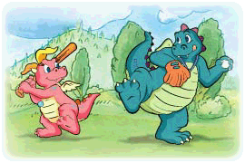

|
 Dragon Tales Episodes - Season Three
Episode 301
Fly With A New Friend, Part 1
Max and Emmy have a new neighbor. His name is Enrique, and he's just moved to the U.S. from Colombia. Enrique's having trouble adjusting to life in his new country, so Max and Emmy invite him to Dragon Land. Enrique is amazed by what he sees there, and his new friends love hearing his stories. Related activity
Dragon Tune "When You Make a New Friend"
The gang sings about what a joy it can be to make a new friend.
Fly With A New Friend, Part 2
Enrique wishes he could make friends more easily. During a tour of Dragon Land with Max, the dragon friends show off their favorite spots. They discover that all the Knuckerholes have vanished, and meet a wizard-in-training who accidentally summoned the Knuckerholes. Related activity
Episode 302
Rise and Bloom
Max has to get up at sunrise to see the Bursting Blossoms bloom in Dragon Land. He just can't seem to get the sleep out of his eyes. His dragon friends have some tips to help him feel more awake. When the gang arrives at Blossom Ridge, they're surprised to find that the blossoms need some help waking up, too. Related activity
Dragon Tune "Dragon Stomp"
Are you ready to learn a brand new dance? It's called the Dragon Stomp, and it's not that hard to do.
Super Snow Day
Max and Emmy are dressed for some snowy fun in Dragon Land. Enrique, who has never seen snow before in person, is a little hesitant to try sledding. His friends really want him to join them on their sled trip to the Icicle Cave, so they help him take small steps to overcome his fear and see how much fun snow can be. Related activity
Episode 303
Musical Scales
Zak and Wheezie work hard to practice a new song for Princess Kidoodle. But they're embarrassed to perform when their scales begin to shed. Before the dragons can cancel the show, Enrique shows them his new, bad haircut and the friends agree to perform for the princess together. Related activity
Dragon Tune "Zak and Wheezie"
The two heads of this two-headed dragon couldn't be more different, but that just proves that two heads are better than one.
Hand in Hand
Max and Emmy get stuck hand in hand when Enrique wishes that they would stop fighting and become closer. Their friends want to wish them apart again, but the wishing well is full of coins, and can't accept any more wishes until all the coins are brought to the bank. Related activity
Episode 304
Sky Soccer
Ord is excited to try out for the Sky Soccer team, but he keeps missing the ball and using the wrong part of his body to touch the ball. He's ready to give up when his friends offer some coaching and advice. During the second half of the tryouts, Ord improves greatly and is proud of his progress, even though he doesn't make the team. Related activity
Dragon Tune "Making It Fun"
This cheerful tune shows you how to make even a dull task like cleaning your room fun.
Making It Fun
Eunice the Unicorn needs the gang to paint a path for the little unicorns who will be racing in the Junior Unicorn race. The friends are eager to help, but become discouraged by the long path. They know that without a path the unicorns will get lost, so they come up with ways to make their work go faster. Related activity
Episode 305
Itching For A Cure
The ground rumbles when Mungus the Giant has a terrible itch and can't stop rolling around on the ground. Dr. Booboogone comes to help, and she prescribes a special "Itch Be Gone" cream. The gang has to face some challenges as they gather the ingredients for the cream, but know how much their big friend needs their help. Related activity
Dragon Tune "Hola"
Here's a new way to greet everyone that you meet. Say, "Hola!" and tell them your name.
The Big Race
Lorca and Enrique get off to a great start in the Big Dragon Land Road Race, but get held back when they can't work together. After listening to Quetzal, they begin to cooperate, and are soon passing by their friends who are having trouble working together. In the end, the gang loses the race, but learns a valuable lesson about teamwork. Related activity
Episode 306
Flip Flop
Zak and Wheezie get flip flopped by a magical two-headed statue, and now Zak is acting like Wheezie and Wheezie is acting like Zak. There's only way to get things back to normal, and that's to get the statue that is now heading down the river. During the journey, Zak and Wheezie learn to appreciate each other's perspective. Related activity
Dragon Tune "Flip Flop"
It's time to take a look at a different point of view. You just have to flip flop and turn things upside down.
Just for Laughs
It's time for the big Custard Egg Hunt in Dragon Land, and the gang has to work together to figure out rhyming clues in order to find six hidden eggs. The clues are difficult, but looking after Kiki and Finn, Cassie's twin brother and sister, are even more work. With some teamwork and surprise help from the toddlers, the hunt ends with one of Quetzal's special treats. Related activity
Episode 307
Lucky Stone
Ord is gloomy because he has lost his lucky heart-shaped stone. He worries that he won't be able to perform his flying tricks without it. His friends split up to find it, and Ord is thrilled when he gets it back. In the end, Ord finds out that he never really needed the lucky stone. Related activity
Dragon Tune "The Ord Shuffle"
Shuffle your feet as the gang sings about the coolest, sweetest dragon in the land.
Max Loves A Train
Max can't wait to pull the whistle on the Dragon Land Express. But soon after the train starts down the tracks, it comes to a stop. The gang soon finds out that some of the tracks are missing. The friends have to find the missing tracks, and help Max cope with disappointment and sadness. Related activity
Episode 308
A New Friend
Lorca's a new dragon in town. He loves to have a good time and perform fantastic magic tricks. He also uses a purple wheelchair with sparkly wheels to get around. The friends can't wait to check out Lorca's wheelchair, and the treasure map he has. They set out with their new friend to find the X that marks the spot. Related activity
Dragon Tune "Friends"
The gang sings about the special people who make you smile and pick you up when you've fallen down.
El Dia del Maestro
The students plan a celebration to surprise Quetzal on "El Dia del Maestro," the day of the teacher. Cassie plans to make chalupas, then frets when she learns that her big sister Sophie can't help her. Emmy encourages her friend to organize the group herself, and after a rocky start, the chalupas are ready to eat. Related activity
Episode 309
Finn's Blankie
Little dragon Finn has never been separated from his favorite blankie before, and now his mom has accidentally sent it to the laundry. Finn throws tantrums and whines, and big sister Cassie enlists the help of her friends to get the blankie back. The friends have to sort through a pile of laundry to find the missing blankie. Related activity
Dragon Tune "Be A Dragon"
Learn how to be a dragon by singing this song with your dragon friends.
Let's Dance
Greta the Goblin has three magical boxes. When she runs off to chase her hat, she leaves the boxes with Wheezie. Greta asks Wheezie not to open the boxes, but Wheezie's curiosity gets the better of her. Soon Zak and Wheezie are dancing uncontrollably and getting tickled all over. Wheezie has to control herself and keep the last box closed or everyone will miss out on a great surprise. Related activity
Episode 310
Express Yourself
Enrique thinks of a great new nickname for Cassie-Pinky! Everyone loves Cassie's new name, except Cassie. Cassie struggles to speak up and tell Enrique how upset she is. Emmy notices how Cassie really feels about her new nickname, and helps her try out different ways to show her true feelings. Related activity
Dragon Tune "Speak Up"
The Dragon Tales friends encourage you to speak up and let everyone know what you're thinking about, even if you feel a little shy.
A Snowman for All Seasons
When it warms up on Snowy Summit, Chilly the Snowman and his snow puppy, Nippy begin to melt. The gang has to find a way to keep their frozen friends from turning into slush. They set out to find Pollynimbus to find out why it stopped snowing, and discover that the snow machine is clogged. Related activity
Episode 311
Prince for a Day
Ord is named prince for the day, and he gives all his friends important positions. Ord thinks that being a prince is an easy job, until he is faced with some tough decisions. Luckily, the decisions are in an area where he's an expert-snacks! Ord comes up with a clever solution that makes everyone happy. Related activity
Dragon Tune "Doodli-Do"
Instead of sitting around and feeling blue, you should get on your feet and doodli-do.
So Long Solo
Zak needs to find a Jugglebug. Wheezie needs to practice for her trumpet solo. They both need to get ready for the Twilight Talent show, but they can't do the two things at the same time. They decide to compromise and take turns. Soon both of their acts are ready, and they give an amazing performance at the talent show. Related activity
Episode 312
The Balancing Act
Ord wants to try Emmy's new skateboard, so Quetzal makes it Ord-sized with some magic Gro-water. Ord tries to ride but wobbles and falls because he doesn't have very good balance. The skateboard shoots out from under the big dragon and is nowhere to be seen. On the way to find it, Ord has opportunities to practice his balance. Related activity
Dragon Tune "Try"
The gang encourages you to try harder and go farther than you've ever gone before.
A Small Victory
Max gets teamed with Lorca when the gang is asked to add plants to the School in the Sky garden. He worries about their physical limitations-he's too small, and Lorca uses a wheelchair. Lorca encourages him to think of what you can do, not what you can't. Max realizes that it only takes some brains and the right tools to overcome any limitation. Related activity
Episode 313
Feliz Cumpleaños, Enrique
Max, Emmy, and their dragon friends throw Enrique a surprise birthday party. But Enrique can't help but feel a little sad because he misses the special traditions of his birthday celebrations back in Colombia. Quetzal encourages Enrique to have a good cry, and then he rejoins the party ready to celebrate. Related activity
Dragon Tune "When You Make a New Friend"
The gang sings about what a joy it can be to make a new friend.
On Thin Ice
Willy the Snow Seal's birthday party provides a great opportunity for Zak and Wheezie to learn how to skate. Their friends are happy to help them. Wheezie is eager to get started, but Zak isn't so sure it's a good idea. Emmy gives them tips for keeping their balance, and for the best way to fall. Related activity
Episode 314
Teasing Is Not Pleasing
Emmy can't wait to play Dragonbasketball with her friends. She's having a great time until two players on the other team tease her when she misses a shot. Emmy tells them just how she feels, but that doesn't stop their teasing. Quetzal helps Emmy see that she has to show the teasers that their words don't bother her anymore. Related activity
Dragon Tune "C'mon and Blow"
You can be just like the breeze if you put your lips together and blow the clouds away.
Down the Drain
Captain Scalawag accidentally pulls the plug in the Dragon Lagoon. Now all the water is gone, and the creatures that live there have no place to go. The captain rounds them up into his aquarium where they can stay until the gang can think of ways to refill the lagoon. Related activity
Episode 315
All That Glitters
Max promises to be careful when he borrows Quetzal's special golden dragon scale. He just wants to take it to a sunny place to see it really shine. On the way to the sunniest part of Dragon Land, the scale falls through a hole in Max's pocket. Max's friends have ideas for finding or replacing the scale, but Max knows that he has to tell Quetzal the truth. Related activity
Dragon Tune "Dance"
You can dance with the Dragon Tales gang as they sing this lively tune.
Dragonberry Drought
It's the best day of the year to pick dragonberries, but all the berries are missing. The gang thinks of different ways to find the berries. They discover a trail of footprints that leads to the giant who picked all the dragonberries. Mungus is using the berries to bake a dragonberry pie, and promises to give them a slice when it is done. Related activity
Episode 316
A Crown for Princess Kidoodle
Princess Kidoodle's new crown gets blown away by the blustery wind, right before her coronation. The friends each have a special challenge to overcome before they can reach their goal. Zak and Wheezie have to compromise, Ord has to face his fear of thunder, and Cassie has to speak up. They do, and arrive with the crown just in time. Related activity
Dragon Tune "Hola"
Here's a new way to greet everyone that you meet. Say, "Hola!" and tell them your name.
Play It and Say It
Ord has trouble remembering how to count in Spanish. His friends help him learn by playing the Spanish version of hopscotch, called Rayuela, with the big dragon. It's a good idea, until Norm the Number Gnome steals the numbers off the ground. While they search for the missing numbers, Ord starts to learn how to count from uno to ocho. Related activity
Episode 317
Moving On
Cassie is devastated when her favorite big sister, Sophie, heads off to cooking school. Every spot in Dragon Land reminds Cassie of her sister and makes her sad all over again. Cassie ends up feeling better when she decides to teach her little sister how to cook Goo-Berry Pudding, just like Sophie taught her. Related activity
Dragon Tune "Cassie"
A musical tribute to Cassie, a dragon who knows her way around all the places in Dragon Land.
Head Over Heels
Quetzal asks the friends to take a bowl of gazpacho to his sick brother. Along the way, they have to pay a toll to Trumpy the tollbooth troll. Emmy doesn't know how she will pay. The toll is one cartwheel, and she can't do one. Her friends give her tips and Emmy keeps on trying, and finally gets good enough to pay the toll. Related activity
Episode 318
All Together Now
Max feels left out when he believes that Emmy and Enrique would rather spend time with each other than with him. He follows his friends' advice and tries to find activities that include everyone, but it doesn't work and he still feels rejected. Can Max learn to have a good time all by himself? Related activity
Dragon Tune "Speak Up"
The Dragon Tales friends encourage you to speak up and let everyone know what you're thinking about, even if you feel a little shy.
Team Work
Zak and Wheezie blame each other when they get sprayed by a Stinkydink Bug. When they go to wash up, they place their dragon badges on a rock. Unfortunately, the rock turns out to be Speedy the Turtle, who wanders away. Zak and Wheezie try to catch up with Speedy, but they are slowed down when they argue. They have to learn to work together or they'll never get their badges back. Related activity
Episode 319
Making It Fun
Eunice the Unicorn needs the gang to paint a path for the little unicorns who will be racing in the Junior Unicorn race. The friends are eager to help, but become discouraged by the long path. They know that without a path the unicorns will get lost, so they come up with ways to make their work go faster. Related activity
Dragon Tune "Making It Fun"
This cheerful tune shows you how to make even a dull task like cleaning your room fun.
The Sorrow and the Party
Max isn't invited to his friend's birthday party, and his feelings are hurt. Even his dragon friends have a hard time cheering him up. Quetzal understands why Max feels sad, and reminds him that it's important to remember that sad feelings don't last forever. Eventually Max begins to cheer up as he has fun with his friends. Related activity
Episode 320
Itching For a Cure
The ground rumbles when Mungus the Giant has a terrible itch and can't stop rolling around on the ground. Dr. Booboogone comes to help, and she prescribes a special "Itch Be Gone" cream. The gang has to face some challenges as they gather the ingredients for the cream, but know how much their big friend needs their help. Related activity
Dragon Tune "Dragon Stomp"
Are you ready to learn a brand new dance? It's called the Dragon Stomp, and it's not that hard to do.
Cassie Catches Up
Cassie becomes frustrated when she can't seem to win a prize at the Dragon Land Fair carnival games. She's not a fast runner, and she doesn't throw a ball very well. When Cassie focuses on her special talents, she thinks of a way to win a prize for herself and her best friend, Emmy. Related activity
Episode 321
The Sad Little Star
A little star named Celeste is curious to see the daytime sights and visits Dragon Land during the day. What Celeste really wants to see is a rainbow. The gang offers to help Celeste by visiting Pollynimbus, but even the weather dragon can't promise a rainbow when it rains. Related activity
Dragon Tune "When You Make a New Friend"
The gang sings about what a joy it can be to make a new friend.
Try It, You'll Like It
Zak's a little leery of trying the new rides and food at the Dragon Land amusement park. His friends remind him of all the things that he likes now. They were new once upon a time! Zak tries some food that he doesn't like very much, and a corn-cob-on-a-stick, which he loves! He also loves the new ride that he works his way up to riding. Related activity
Episode 322
The Big Race
Lorca and Enrique get off to a great start in the Big Dragon Land Road Race, but get held back when they can't work together. After listening to Quetzal, they begin to cooperate, and are soon passing by their friends who are having trouble working together. In the end, the gang loses the race, but learns a valuable lesson about teamwork. Related activity
Dragon Tune "Making It Fun"
This cheerful tune shows you how to make even a dull task like cleaning your room fun.
Bye, Bye Baby Birdie
The gang discovers a family of rhyming birds, and Emmy bonds with the baby. They have so much fun together that they don't notice when the baby bird's family flies away. Emmy's attached to her friend, but understands that the baby bird needs to go home. The gang sets out to find the rhyming birds, and Emmy learns to say goodbye to her new friend. Related activity
Episode 323
Sky Soccer
Ord is excited to try out for the Sky Soccer team, but he keeps missing the ball and using the wrong part of his body to touch the ball. He's ready to give up when his friends offer some coaching and advice. During the second half of the tryouts, Ord improves greatly and is proud of his progress, even though he doesn't make the team. Related activity
Dragon Tune "Try"
The gang encourages you to try harder and go farther than you've ever gone before.
Room for A Change
Cassie's family is getting bigger, and it's time for a new room. Cassie checks out the room with her friends and likes it, but is still sad to be leaving her old room. She learns to love the room after all her favorite things are moved in, and, when she finds a secret closet, she decides it's the best room ever! Related activity
Episode 324
Rise and Bloom
Max has to get up at sunrise to see the Bursting Blossoms bloom in Dragon Land. He just can't seem to get the sleep out of his eyes. His dragon friends have some tips to help him feel more awake. When the gang arrives at Blossom Ridge, they're surprised to find that the blossoms need some help waking up, too. Related activity
Dragon Tune "Wake Up"
Jump up and say "good morning" to the day with a song.
Dragon Scouts
Cassie brings Emmy along to one of her Dragon Scouts meetings. But when Cassie has to leave, Emmy's not quite sure how to make friends with the other scouts. Emmy tries to get their attention, but is embarrassed when her berry-picking trick backfires. She finally fits in when she suggests that the scouts use teamwork to complete a task. Related activity
Episode 325
Musical Scales
Zak and Wheezie work hard to practice a new song for Princess Kidoodle. But they're embarrassed to perform when their scales begin to shed. Before the dragons can cancel the show, Enrique shows them his new, bad haircut and the friends agree to perform for the princess together. Related activity
Dragon Tune "Zak and Wheezie"
The two heads of this two-headed dragon couldn't be more different, but that just proves that two heads are better than one.
Something's Missing
Emmy's away at camp, so Max spends a day in Dragon Land without her. Cassie thinks Max will have fun doing some of the things Emmy is doing at camp. But Max still misses his big sister terribly, so he draws pictures of all the fun things he's been doing with the dragons. Then Max sends the pictures to Emmy so he can share his fun with her. Related activity
Episode 326
Green Thumbs
When a baby flower gets uprooted by the rain, the gang has to figure out how to keep her healthy and happy. They find out that, in addition to soil, Lily needs sun and water to live-just not too much! The friends find help for Lily's and plant her back in the ground where she belongs. Related activity
Dragon Tune "C'mon and Blow"
You can be just like the breeze if you put your lips together and blow the clouds away.
Hand in Hand
Max and Emmy get stuck hand in hand when Enrique wishes that they would stop fighting and become closer. Their friends want to wish them apart again, but the wishing well is full of coins, and can't accept any more wishes until all the coins are brought to the bank. Related activity
Episode 327
Cassie, the Green-Eyed Dragon
Cassie brings her little brother Finn to school with her. But when he gets all the attention, she wishes that she'd never brought him. Cassie admits to Quetzal that she is jealous of Finn, and Quetzal assures her that this is a normal feeling. When Finn gets hungry, Cassie is the only one who can save the day and get Finn to eat his snack. Related activity
Dragon Tune "Cassie"
A musical tribute to Cassie, a dragon who knows her way around all the places in Dragon Land.
Hello, Miss Tipps
Quetzal's called away from Dragon Land, and the friends aren't thrilled about their new substitute teacher, Miss Tipps. Miss Tipps takes the class on an unusual field trip, and then reads them a story that Quetzal had promised to share with them. The friends realize that sometimes a little change can be a good thing. Related activity
Episode 328
Super Snow Day
Max and Emmy are dressed for some snowy fun in Dragon Land. Enrique, who has never seen snow before in person, is a little hesitant to try sledding. His friends really want him to join them on their sled trip to the Icicle Cave, so they help him take small steps to overcome his fear and see how much fun snow can be. Related activity
Dragon Tune "Flip Flop"
It's time to take a look at a different point of view. You just have to flip flop and turn things upside down.
Make No Mistake
Zak's incredibly excited when he gets the lead role in the School in the Sky play. But he becomes paralyzed with fear when he worries about making a mistake in front of an audience. When Max sees Ord and Quetzal make mistakes on stage, he realizes that everyone makes mistakes, and it's okay to just laugh them off. Related activity
Episode 329
Finders Keepers
The kids and dragons can't wait to visit the new Dragon Land aquarium, but Wheezie has lost the tickets. Wheezie's friends help her retrace her steps, right back to her very messy room. Everyone pitches in to help Wheezie clean up and they find the tickets and head back to the aquarium. Related activity
Dragon Tune "Friends"
The gang sings about the special people who make you smile and pick you up when you've fallen down.
A Storybook Ending
Enrique is invited to choose a story from Quetzal's Magic Story Book. He recognizes a picture of a young Quetzal, and finds himself inside the story of a quest that Quetzal made in his youth. To find success at Quetzal's quest, the friends have to learn to see things from each other's perspectives. Related activity
Dragon Tales Episodes - Season Two
Episode 201
Lucky Stone
Ord is gloomy because he has lost his lucky heart-shaped stone. He worries that he won't be able to perform his flying tricks without it. His friends split up to find it, and Ord is thrilled when he gets it back. In the end, Ord finds out that he never really needed the lucky stone. Related activity
Dragon Tune "Doodli-Do"
Instead of sitting around and feeling blue, you should get on your feet and doodli-do.
The Me-First Wizard
The friends build an obstacle course together, but then argue over who will go first. Their fighting summons the Me-First Wizard, who starts playing on the course and won't let anyone else take a turn. The only way the friends can get rid of the Wizard is by cooperating and deciding who will start Quetzal's chant. Related activity
Episode 202
Cassie Catches Up
Cassie becomes frustrated when she can't seem to win a prize at the Dragon Land Fair carnival games. She's not a fast runner, and she doesn't throw a ball very well. When Cassie focuses on her special talents, she thinks of a way to win a prize for herself and her best friend, Emmy. Related activity
Dragon Tune "Friends"
The gang sings about the special people who make you smile and pick you up when you've fallen down.
Very Berry
Everyone heads out to look for dragonberries to pick for Quetzal's dragonberry pie. Ord wanders off as he looks for a new picking spot, and ends up stuck in a dark, snug cave. His friends come to the rescue, and try out different methods to get Ord un-stuck. What they really need is some super-slippery mud and a good, strong tug! Related activity
Episode 203
Finders Keepers
The kids and dragons can't wait to visit the new Dragon Land aquarium, but Wheezie has lost the tickets. Wheezie's friends help her retrace her steps, right back to her very messy room. Everyone pitches in to help Wheezie clean up and they find the tickets and head back to the aquarium. Related activity
Dragon Tune "Dance"
You can dance with the Dragon Tales gang as they sing this lively tune.
Remember the Pillow Fort
During dress-up play, Max and Ord pretend to be kings and build pillow forts. They fight over who has chosen the best color pillows for the fort. Zak and Wheezie watch Max and Ord fighting and write a song about how sad it is to fight instead of play. The song inspires Max to stop fighting and work together. Related activity
Episode 204
Big Funky Cloud
Ord feels incredibly sad when he drops his favorite blanket in the creek, and can't get rid of the gloomy feeling. He can't get rid of the big, funky rain cloud that's been following him around either. Max and Emmy make an emergency visit to Dragon Land to help their friends think of ways to cheer up Ord and get rid of the cloud. Related activity
Dragon Tune "Doodli-Do"
Instead of sitting around and feeling blue, you should get on your feet and doodli-do.
Copy Cat
Emmy wants Max to be just like her. Her wish comes true when Max is licked by a copy cat and begins to act just like Emmy. Emmy learns that she likes Max better when he thinks and acts for himself. Now she has to get her friends help to find the cat and get her little brother back. Related activity
Episode 205
One Big Wish
Max wishes he could be big enough to hit home runs and catch fly ball. He finds a wishing well that grants his wish, and Max begins to grow and grow. Soon he's even bigger than Mungus the Giant. Max finds out that being big is not all that he thought it would be, and gets his friends to help him return to his own size. Related activity
Dragon Tune "Friends"
The gang sings about the special people who make you smile and pick you up when you've fallen down.
Breaking Up Is Hard to Do
Max and Ord work together to make a terrific project at the School in the Sky. But when it's time to take the "Whatayacallit" home, they argue over who will be first. Cassie suggests that they try cutting their creation in half, but it doesn't work or look right. Max and Ord agree to build another "Whatayacallit" and take turns bringing it home. Related activity
Episode 206
A New Friend
Lorca's a new dragon in town. He loves to have a good time and perform fantastic magic tricks. He also uses a purple wheelchair with sparkly wheels to get around. The friends can't wait to check out Lorca's wheelchair, and the treasure map he has. They set out with their new friend to find the X that marks the spot. Related activity
Dragon Tune "Dance"
You can dance with the Dragon Tales gang as they sing this lively tune.
Have No Fear
Cassie's new teeny tiny pet butterfrog looks harmless, but Ord is convinced it can hurt him. Cassie tries to show Ord how much fun her pet is, but Ord can't shake his fear. But when the butterfrog flies away, Ord has to put his fear aside to help his friend get her pet back. Related activity
Episode 207
Cassie, the Green-Eyed Dragon
Cassie brings her little brother Finn to school with her. But when he gets all the attention, she wishes that she'd never brought him. Cassie admits to Quetzal that she is jealous of Finn, and Quetzal assures her that this is a normal feeling. When Finn gets hungry, Cassie is the only one who can save the day and get Finn to eat his snack. Related activity
Dragon Tune "Doodli-Do"
Instead of sitting around and feeling blue, you should get on your feet and doodli-do.
Something's Missing
Emmy's away at camp, so Max spends a day in Dragon Land without her. Cassie thinks Max will have fun doing some of the things Emmy is doing at camp. But Max still misses his big sister terribly, so he draws pictures of all the fun things he's been doing with the dragons. Then Max sends the pictures to Emmy so he can share his fun with her. Related activity
Episode 208
A Crown for Princess Kidoodle
Princess Kidoodle's new crown gets blown away by the blustery wind, right before her coronation. The friends each have a special challenge to overcome before they can reach their goal. Zak and Wheezie have to compromise, Ord has to face his fear of thunder, and Cassie has to speak up. They do, and arrive with the crown just in time. Related activity
Dragon Tune "Friends"
The gang sings about the special people who make you smile and pick you up when you've fallen down.
Three's A Crowd
Cassie and Emmy have been planning a crystal gathering day for weeks. But when Quetzal introduces them to Nicki, a new dragon, Emmy leaves Cassie to play with Nicki. Cassie feels sad and deserted. After talking to Quetzal, she shares her feelings with Emmy, who is surprised to learn how her friend feels. Related activity
Episode 209
Knuck, Knuck Who's Where?
The Giant of Nod snatches Cassie's pick-up sticks, so she and Emmy follow him into a Knuckerhole. The friends head down the twisty paths, and Cassie drops sticks to help them find their way back. When they find the giant, they discover that he thought the sticks were firewood. Now they have to find their way out of the Knuckerhole. Related activity
Dragon Tune "Dance"
You can dance with the Dragon Tales gang as they sing this lively tune.
Just Desserts
The friends have a great time sliding and jumping all over a giant jiggly mountain. Unfortunately, the mountain is really a special dessert that Mungus the Giant has made for his mother, and now it's all messed up. Everyone vows to help him make another, but first they have to figure out a way to keep track of the ingredients. Related activity
Episode 210
Dragonberry Drought
It's the best day of the year to pick dragonberries, but all the berries are missing. The gang thinks of different ways to find the berries. They discover a trail of footprints that leads to the giant who picked all the dragonberries. Mungus is using the berries to bake a dragonberry pie, and promises to give them a slice when it is done. Related activity
Dragon Tune "Doodli-Do"
Instead of sitting around and feeling blue, you should get on your feet and doodli-do.
A Snowman for All Seasons
When it warms up on Snowy Summit, Chilly the Snowman and his snow puppy, Nippy begin to melt. The gang has to find a way to keep their frozen friends from turning into slush. They set out to find Pollynimbus to find out why it stopped snowing, and discover that the snow machine is clogged. Related activity
Episode 211
I Believe in Me
Cassie really wants to sign up for the new school play, but she's too shy. Emmy convinces her to try out and Cassie's friends work to help the dragon overcome her fear of performing in front of people. Cassie begins to feel more comfortable after she practices, and wins a role in her very first play. Related activity
Dragon Tune "The Ord Shuffle"
Shuffle your feet as the gang sings about the coolest, sweetest dragon in the land.
Bye, Bye Baby Birdie
The gang discovers a family of rhyming birds, and Emmy bonds with the baby. They have so much fun together that they don't notice when the baby bird's family flies away. Emmy's attached to her friend, but understands that the baby bird needs to go home. The gang sets out to find the rhyming birds, and Emmy learns to say goodbye to her new friend. Related activity
Episode 212
Back to the Fairy Tales
Cassie brings her little brother and sister to school, but when they start to fuss, everyone heads into Quetzal's Magic Pop-up Book. There, they use their imaginations to help out their favorite fairytale characters. Their adventures end with a pizza party for all their storybook friends. Related activity
Dragon Tune "Cassie"
A musical tribute to Cassie, a dragon who knows her way around all the places in Dragon Land.
Dragon Scouts
Cassie brings Emmy along to one of her Dragon Scouts meetings. But when Cassie has to leave, Emmy's not quite sure how to make friends with the other scouts. Emmy tries to get their attention, but is embarrassed when her berry-picking trick backfires. She finally fits in when she suggests that the scouts use teamwork to complete a task. Related activity
Episode 213
The Serpent's Trail
A sneaky serpent swipes Emmy's new detective kit. Their friends use their heads to follow the clues that Cyrus the Serpent left behind, and find the lost kit. They also discover that Cyrus was planning to find some baby Dragongull eggs on his treasure hunt. The friends make sure the babies are safe and sound before heading home. Related activity
Dragon Tune "Wake Up"
Jump up and say "good morning" to the day with a song.
Head Over Heels
Quetzal asks the friends to take a bowl of gazpacho to his sick brother. Along the way, they have to pay a toll to Trumpy the tollbooth troll. Emmy doesn't know how she will pay. The toll is one cartwheel, and she can't do one. Her friends give her tips and Emmy keeps on trying, and finally gets good enough to pay the toll. Related activity
Episode 214
Sticky Situation
Max volunteers for the important job of keeping an eye on some baby animals. But he soon tires of watching carefully, and a little dragonpig named Oinkers wanders away. The gang follows the dragonpig's footprints and meets a dragonfrog who is just like Max. He'd rather play than do his job, too! Related activity
Dragon Tune "The Ord Shuffle"
Shuffle your feet as the gang sings about the coolest, sweetest dragon in the land.
Green Thumbs
When a baby flower gets uprooted by the rain, the gang has to figure out how to keep her healthy and happy. They find out that, in addition to soil, Lily needs sun and water to live-just not too much! The friends find help for Lily's and plant her back in the ground where she belongs. Related activity
Episode 215
Teasing Is Not Pleasing
Emmy can't wait to play Dragonbasketball with her friends. She's having a great time until two players on the other team tease her when she misses a shot. Emmy tells them just how she feels, but that doesn't stop their teasing. Quetzal helps Emmy see that she has to show the teasers that their words don't bother her anymore. Related activity
Dragon Tune "Cassie"
A musical tribute to Cassie, a dragon who knows her way around all the places in Dragon Land.
Team Work
Zak and Wheezie blame each other when they get sprayed by a Stinkydink Bug. When they go to wash up, they place their dragon badges on a rock. Unfortunately, the rock turns out to be Speedy the Turtle, who wanders away. Zak and Wheezie try to catch up with Speedy, but they are slowed down when they argue. They have to learn to work together or they'll never get their badges back. Related activity
Episode 216
On Thin Ice
Willy the Snow Seal's birthday party provides a great opportunity for Zak and Wheezie to learn how to skate. Their friends are happy to help them. Wheezie is eager to get started, but Zak isn't so sure it's a good idea. Emmy gives them tips for keeping their balance, and for the best way to fall. Related activity
Dragon Tune "Wake Up"
Jump up and say "good morning" to the day with a song.
The Shape of Things to Come
Zak's new dragondisk gets all sticky in Marshmallow Marsh, and the only way to clean it is to dip it in Crystal Fountain. The gang heads to the Crystal Cave, but before they can get any further, they have to match the shapes on the door that guard the fountain. They split up and hunt for objects that are square, circle, and triangle shaped. Related activity
Episode 217
Hide and Can't Seek
Ord isn't very excited on Hide-and-Seek Day. It seems the big dragon isn't very good at playing the game. With his friends' help, Ord tries out some new seeking strategies. Ord uses the skills he's learned to find Max, and is so excited that he wants to keep playing the game. Related activity
Dragon Tune "The Ord Shuffle"
Shuffle your feet as the gang sings about the coolest, sweetest dragon in the land.
The Art of Patience
Max can't wait to get Quetzal's birthday party started. His impatience causes him to ruin the sculptures his friends have created for the celebration. Max wants to make it up to his friends by helping them make new sculptures. The slow process tests Max's patience, but his friends have some tricks to help him pass the time. Related activity
Episode 218
So Long Solo
Zak needs to find a Jugglebug. Wheezie needs to practice for her trumpet solo. They both need to get ready for the Twilight Talent show, but they can't do the two things at the same time. They decide to compromise and take turns. Soon both of their acts are ready, and they give an amazing performance at the talent show. Related activity
Dragon Tune "Cassie"
A musical tribute to Cassie, a dragon who knows her way around all the places in Dragon Land.
Hands Together
Zak and Wheezie create a new dance for the Happy Hearts Festival, and can't wait to teach their friends the steps. The dance isn't so easy for Ord, who has trouble learning the steps. Just when Ord is ready to give up, his friends help him learn the steps at his own pace. At the show, Ord doesn't get all the steps right, but everyone is proud of him. Related activity
Episode 219
Sneezy Does It
Max and Emmy bring their kites to Dragon Land, but the wind is out of control and their kites land in a tree. The gang visits the Big Whistling Wind to find out what is going on and learns that he's sick. Dr. Booboogone tells them that their friend needs rest, warmth, and a big bowl of Sneeze-away soup. Related activity
Dragon Tune "Wake Up"
Jump up and say "good morning" to the day with a song.
Try It, You'll Like It
Zak's a little leery of trying the new rides and food at the Dragon Land amusement park. His friends remind him of all the things that he likes now. They were new once upon a time! Zak tries some food that he doesn't like very much, and a corn-cob-on-a-stick, which he loves! He also loves the new ride that he works his way up to riding. Related activity
Episode 220
Just for Laughs
It's time for the big Custard Egg Hunt in Dragon Land, and the gang has to work together to figure out rhyming clues in order to find six hidden eggs. The clues are difficult, but looking after Kiki and Finn, Cassie's twin brother and sister, are even more work. With some teamwork and surprise help from the toddlers, the hunt ends with one of Quetzal's special treats. Related activity
Dragon Tune "The Ord Shuffle"
Shuffle your feet as the gang sings about the coolest, sweetest dragon in the land.
Give Zak A Hand
Spike is having a fiesta, and the Dragon Land friends are all set to party. Unfortunately, Zak has hurt his wrist, and now has bumpophobia, a fear that he will bump his wrist again. The gang convinces Zak to come, and they all work together to change a game of "Head, Shoulders, Knees, and Toes" so that Zak can be included at the fiesta. Related activity
Episode 221
Make No Mistake
Zak's incredibly excited when he gets the lead role in the School in the Sky play. But he becomes paralyzed with fear when he worries about making a mistake in front of an audience. When Max sees Ord and Quetzal make mistakes on stage, he realizes that everyone makes mistakes, and it's okay to just laugh them off. Related activity
Dragon Tune "Be A Dragon"
Learn how to be a dragon by singing this song with your dragon friends.
The Balancing Act
Ord wants to try Emmy's new skateboard, so Quetzal makes it Ord-sized with some magic Gro-water. Ord tries to ride but wobbles and falls because he doesn't have very good balance. The skateboard shoots out from under the big dragon and is nowhere to be seen. On the way to find it, Ord has opportunities to practice his balance. Related activity
Episode 222
Room For A Change
Cassie's family is getting bigger, and it's time for a new room. Cassie checks out the room with her friends and likes it, but is still sad to be leaving her old room. She learns to love the room after all her favorite things are moved in, and, when she finds a secret closet, she decides it's the best room ever! Related activity
Dragon Tune "Try"
The gang encourages you to try harder and go farther than you've ever gone before.
The Sorrow and the Party
Max isn't invited to his friend's birthday party, and his feelings are hurt. Even his dragon friends have a hard time cheering him up. Quetzal understands why Max feels sad, and reminds him that it's important to remember that sad feelings don't last forever. Eventually Max begins to cheer up as he has fun with his friends. Related activity
Episode 223
The Grudge Won't Budge
Zak feels angry and hurt when Wheezie accidentally breaks his snoot flute. A real live grudge latches onto Zak's back, and won't go away. Everyone tries to get rid of the grudge, but there's only one thing that will work. Zak has to tell Wheezie just how he feels. Related activity
Dragon Tune "Be A Dragon"
Learn how to be a dragon by singing this song with your dragon friends.
Putting the Fun in Fun Houses
Ord knows that fun houses should be fun, but he's scared because it's dark and he doesn't know what he'll find around each corner. The gang helps him cope with his fear by building a fun house of their own. Now Ord knows what to expect. He has a great time walking through the dragon's homemade fun house with his friends. Related activity
Episode 224
Puzzlewood
The dragon friends are lost in a forest of puzzles. A helpful Dragon-Fairy tells them they'll have to go through three doors and solve three puzzles in order to find their way out of Puzzlewood. At first, the friends have trouble remembering what the doors want, but they try different memory strategies and solve all three puzzles. Related activity
The gang encourages you to try harder and go fart
Dragon Tune "Try"
her than you've ever gone before.
Let's Dance
Greta the Goblin has three magical boxes. When she runs off to chase her hat, she leaves the boxes with Wheezie. Greta asks Wheezie not to open the boxes, but Wheezie's curiosity gets the better of her. Soon Zak and Wheezie are dancing uncontrollably and getting tickled all over. Wheezie has to control herself and keep the last box closed or everyone will miss out on a great surprise. Related activity
Episode 225
Just the Two of Us
Zak and Wheezie learn the benefits of sharing when the special toy they build turns out to be more fun with the contributions of the others. Related activity
Dragon Tune "Be A Dragon"
Learn how to be a dragon by singing this song with your dragon friends.
Cowboy Max
Max scrapes his elbow when he tumbles off Bronco, a special carousel pony. He is eager to ride again, but afraid he might get hurt a second time so Max turns to Emmy and the dragons to help him. With their inventive solutions he overcomes his fear and they are all rewarded with a magical ride when the carousel ponies come to life. Related activity
Dragon Tales Episodes - Season One
Episode 101
To Fly with Dragons
Four-year-old Max and his older sister Emmy have mixed feelings about their new home, until they discover their new magical playroom. Max and Emmy find that a dragon scale and a poem transport them to Dragon Land. There, they meet some dragons who have never met children before, and who are amazed to learn that children can't fly. Related activity
Dragon Tune "Hello"
The Dragon Tales gang sings about a great way to make a new friend. All you have to do is smile and say, "Hello!"
Forest of Darkness
Ord gets assigned a special mission to go into the Forest of Darkness and bring back a seed from the Star Tree. He won't be able to complete his task until he faces his fear of the dark. Luckily, he's brought along some friends who help him learn some new ways to cope with his fear. Related activity
Episode 102
To Kingdom Come
There's a beach party in Dragon Land, and Ord has found a rare Wish Shell. Everyone wants to use the special new shell, but Ord doesn't want to share. He wishes himself to Kingdom Come, a place where he will never have to share. But the Wish Shell only has three wishes, and if Ord doesn't learn how to share, he will never find his way home. Related activity
Dragon Tune "Shake"
It's time to get on up, move your feet, and shake your dragon tail!
Goodbye Little Caterpoozle
Cassie has to deal with the loss of a pet when she finds her caterpoozle, Poozie, wrapped in a cocoon. Everyone believes that Poozie has died. Cassie's friends help her feel better by sharing their favorite memories of Poozie. They even offer to find a new pet for Cassie, but she's not convinced that a new caterpoozle can take Poozie's place. Related activity
Episode 103
Knot a Problem
It's Merry-Go-Round Day, the one special day a year when the carousel comes to Dragon Land. But the dragons can't ride because one of the ponies has wandered off. The friends head off to round up the pony. Max wants to help, but first he has to learn how to tie a knot in the rope they've brought so that they can lead the pony back to the carousel. Related activity
Dragon Tune "Round & Round"
You'll wiggle and giggle as this catchy tune encourages you to stomp on the ground as the world goes round and round.
Ord's Unhappy Birthday
Ord is excited about his birthday, but his feelings change when he finds that his friends aren't interested in playing with him. Ord has no idea that everyone is avoiding him because they're planning a big surprise party. Ord visits Quetzal, who knows that the only way for Ord to feel better, is to tell his friends exactly how he's feeling. Related activity
Episode 104
Tails You Lose
Emmy loses a soccer game and vows to never play again. She feels the same way about losing when she's the first to unfreeze at a game of "Freeze Dance" with her dragon friends. Emmy leaves Max behind and storms home. Will she learn that winning isn't all that matters? Related activity
Dragon Tune "Hum"
There's something you can do when you're feeling scared and your heart begins to drum-just relax and hum!
Calling Dr. Zak
Zak and Wheezie are all ready to compete in the Two-Headed Dragon Contest, until Zak gets a thorn stuck in his foot. Everyone agrees that this is a job for Dr. Booboogone, but Zak is scared. Zak's friends help ease his fears by playing pretend doctor. After Quetzal's reassurance, Zak agrees to give Dr. Booboogone a try. Related activity
Episode 105
Pigment of Your Imagination
The dragons need more paint to finish their presents for "I Love My Mommy" Day. Quetzal sends them to Rainbow Canyon and gives them a map drawn on a plate. But when Max and Emmy fight on the journey, they wind up breaking the map. The friends have to work together to fix the map before it rains and all the colors in the canyon run together. Related activity
Dragon Tune "Hello"
The Dragon Tales gang sings about a great way to make a new friend. All you have to do is smile and say, "Hello!"
Zak's Song
Max and Emmy help the dragons find the source of the beautiful music they've been hearing every morning. It's the Do-Re-Mi birds. Zak worries that Wheezie's loud singing will scare away the birds, and he's right. Zak knows how to lure the birds back, but no one pays attention to him and they chase the birds further and further away. Related activity
Episode 106
Snow Dragons
Emmy and Max are dressed and ready for their trip to Snowy Summit. But when Emmy finds out that Cassie has a cold, she decides to stay behind to keep her dragon friend company. Max and Ord follow Quetzal on their adventure, but they soon get sidetracked by a hollowed-out log and forget Quetzal's advice to stay together. Luckily, they find a rock that points them in the right direction. Related activity
Dragon Tune "Shake"
It's time to get on up, move your feet, and shake your dragon tail!
The Fury Is Out on This One
When Max gets angry during a competitive game of Dragon Tag, he unleashes a Fury, a little man with steam rising from his head. As Max's anger grows, the Fury gets bigger, and bigger, until soon he towers over Ord. Max has to learn to control his anger in order to send the Fury back to his pod. Related activity
Episode 107
Giant of Nod
Zak and Wheezie can't agree on a song to perform at the concert at the Singing Springs Amphitheater. Zak likes slow, melodic music. Wheezie wants something loud and rocking. Their bickering awakens the sleeping Giant of Nod, who is only giant-sized to the even tinier gnomes around him. But watch out for this tiny giant, because he's incredibly strong! Related activity
Dragon Tune "Round & Round"
You'll wiggle and giggle as this catchy tune encourages you to stomp on the ground as the world goes round and round.
The Big Sleepover
Zak and Wheezie invite all their friends to a sleepover. Everyone's excited but Cassie, who's worried because she's never spent the night away from home. Cassie brings along a photo of her family to remind her of home. She has lots of fun playing games with her friends, but she still misses her parents. Related activity
Episode 108
A Picture's Worth A Thousand Words
Ord gets his friends to help him find some Giggle Flowers for his mom's birthday celebration. They search high and low, and meet a Doodle Fairy who might be able to help them, but she can't speak. The friends have to "read" the Doodle Fairy's drawings so that they can find more flowers. Related activity
Dragon Tune "Shake"
It's time to get on up, move your feet, and shake your dragon tail!
Talent Pool
Cassie really wants to be part of the dragons' talent show, but she doesn't believe that she has any special talent. Quetzal directs her to the Talent Pool, a talking pond that awards talents to all who seek them. But when Cassie visits the Talent Pool, she discovers her true talents and finds out that she doesn't need his help at all. Related activity
Episode 109
Emmy's Dreamhouse
Emmy and Max ask their dragon friends to help them build the treehouse of their dreams. Everyone works together to finish before the looming storm clouds arrive. But when Emmy starts bossing everyone around, the others leave her to finish the job herself. Emmy has to figure out how to get her friends back so she can finish the treehouse. Related activity
Dragon Tune "Hello"
The Dragon Tales gang sings about a great way to make a new friend. All you have to do is smile and say, "Hello!"
Dragon Sails
Cassie just needs a rainbow-colored crystal to finish her crystal set, and her friends are eager to help her get it. They set sail for Rainbow Canyon, but Ord's heavy weight rocks the boat and they all fall into the water. Ord worries that his friends will go on without him, and frets about being so big. But his friends solve the problem by building a bigger, Ord-sized boat. Related activity
Episode 110
Eggs Over Easy
Cassie is too shy to speak up when a slinky serpent claims that a sparkling green egg is his. Cassie knows the truth, and her friends find out where the egg really came from when they find a bird's nest filled with eggs just like it. Cassie blames herself for being afraid to tell the truth and worries that the serpent will eat the egg. Related activity
Dragon Tune "Hum"
There's something you can do when you're feeling scared and your heart begins to drum-just relax and hum!
A Liking to Biking
A rainy day means that Max and Emmy won't be able to go bike riding. Or will they? They head to Dragon Land where the sun is shining bright. Max and Emmy show off their bike-riding skills, and Ord can't wait to try it himself. He just needs some help and encouragement to learn this new skill. Related activity
Episode 111
Sky Pirates
The gang chases after Wheezie's Monster-Mega ball, and meets Captain Scaliwag, a pirate who is searching for a treasure he buried a long time ago. Max, Emmy, and the dragon friends set sail with the captain. They use three sketches that the captain drew when he was a child to help locate his childhood toys. Related activity
Dragon Tune "Wiggle"
Fingers and toes, your hands and your nose, are just some of the body parts you can wiggle when you sing the wiggle song.
Four Little Pigs
Emmy and Max bring their dad's old clothes to Dragon Land. The friends agree to stage a production of "The Three Little Pigs". Ord, Max, and Cassie are happy to play the pigs, but trouble arises when it's time to cast the part of the wolf. Emmy wants the part, and so do Zak and Wheezie, who decide to leave if they can't be the wolf. Related activity
Episode 112
Zak and the Beanstalk
Zak and Wheezie worry when the Do-Re-Mi birds are missing. What could have happened to them? Their friend Sid Sycamore says that the birds have been taken by Mungus the Giant. The gang sneaks into the giant's castle and confronts him. They learn that he only took the birds because he loves their music. Related activity
Dragon Tune "Round & Round"
You'll wiggle and giggle as this catchy tune encourages you to stomp on the ground as the world goes round and round.
A Feat on Her Feet
Cassie's wagon, filled with Jingle Flowers, breaks when it slams into a ditch. The flowers need some musical water fast. There's only one way to get them to the Singing Springs, and that's to skate the wagon there. Unfortunately, Cassie doesn't know how to skate. But with her friends' coaching, and her determination, she learns the right moves. Related activity
Episode 113
Not Separated at Birth
Zak and Wheezie have been joined from the neck down since birth. But a fight makes them wish for separate bodies, and Quetzal has the magic crystal that will grant their wish. Zak and Wheezie enjoy their new independence at first, but their feelings soon change when Wheezie misses Zak's patience and Zak misses Wheezie, who always knows how to make things fun. Related activity
Dragon Tune "Wiggle"
Fingers and toes, your hands and your nose, are just some of the body parts you can wiggle when you sing the wiggle song.
A Kite for Quetzal
It's Kite Day, and the friends decide to make a special kite for Quetzal. They begin by making a list of all the things they'll need to build their kite. Then they head off in different directions to find the things on the list. They soon return, but everyone's gathered sticks and strings. It's time for a better plan. Related activity
Episode 114
Dragon Drop
Emmy helps Zak and Wheezie prepare for the Dragon Fair. They want to join the Sackberry Toss, but they don't know how to catch. Emmy gives her friends the basics, and the dragon team learns to stand in front of the ball, keep their eyes on it, and use both hands to catch. Related activity
Dragon Tune "Hello"
The Dragon Tales gang sings about a great way to make a new friend. All you have to do is smile and say, "Hello!"
Cassie Loves A Parade
Cassie's ready to ride on the Book Float in the School in the Sky parade. She's shocked when Quetzel draws names from a hat and she finds out her name hasn't been picked. Cassie flies off and meets a flower who's upset because he also wasn't chosen to be part of the parade. Related activity
Episode 115
A Cool School
Emmy finds Max hiding because he is afraid of going to school. She has a great idea and gets permission from Quetzal to go to the dragons' School in the Sky for the day. The fire breathing and flying lessons are challenging for the kids, but Quetzal encourages them to think of new ideas, instead of just giving up. Related activity
Dragon Tune "Wiggle"
Fingers and toes, your hands and your nose, are just some of the body parts you can wiggle when you sing the wiggle song.
Max's Comic Adventure
Max believes that his favorite superhero, Mondo Mouse, is real, Emmy does not. But when Max brings his comic, and its 3-D glasses to Dragon Land, he and his friends begin to see strange picture symbols all over Dragon Land. The symbols lead the gang to Mondo Mouse, who's been caged and needs their help to escape. Related activity
Episode 116
It Happened One Nightmare
Max and Emmy are enjoying the festivities at the Dragon Land carnival, but the dragons are too tired to party with them. Ord invited everyone to a sleepover, but kept them up all night because of a bad nightmare. Everyone agrees that it's a good idea to take a nap in Quetzal's hammock, but Ord is worried that he'll have another bad dream. Related activity
Dragon Tune "Hum"
There's something you can do when you're feeling scared and your heart begins to drum-just relax and hum!
Staying Within the Lines
A storm has washed away all the color away from Dragon Land, and the gang is eager to help. Quetzal gives them the job of coloring in the Stickleback Mountains, but warns them not to wake up a mean, sleeping giant. Max has some trouble staying within the lines, and winds up tickling the giant with his crayon. It's a good thing the giant likes his new hair and beard. Related activity
Episode 117
Follow the Dots
Ord's special whistler gets lost during a game of "Whack It Back." Norm the Number Gnome offers to help, but first the friends have to solve his number puzzle. They split up and get busy finding dots next to objects representing the numbers one through ten. They connect the dots and a dragon's-eye-view from the sky shows them an arrow that points to Ord's whistler. Related activity
Dragon Tune "Shake"
It's time to get on up, move your feet, and shake your dragon tail!
A Smashing Success
Max and Emmy work the spotlight for one of the dragons' concerts. During a break, Emmy tries out Wheezie's trumpet and accidentally breaks it. Emmy makes Max promise not to tell, and Wheezie blames Zak, and then Cassie. Finally, Max tells Quetzal the truth. Quetzal listens to a wild story Emmy makes up, then advises her to tell Wheezie the truth. Related activity
Episode 118
Quibbling Siblings
Zak wants to find a Jugglebug to show at school during Sharing Time, but Wheezie's antics keep getting in the way. She interrupts his sleep with her loud noises, ruins his breakfast, and loses his magnifying glass. Wheezie can't understand why Zak's so angry, until Emmy and Max explain how important the mission is to Zak. Related activity
Dragon Tune "Round & Round"
You'll wiggle and giggle as this catchy tune encourages you to stomp on the ground as the world goes round and round.
Wheezie's Hairball
Zak and Wheezie have a strange new pet, an orange baby boinger named Slurpy. They struggle as they learn how to take care of him. Since Slurpy can't talk, the only way he can communicate what he needs is by bouncing and spinning around. Related activity
Episode 119
A Tall Tale
Max complains that he's too short to do anything. He's really frustrated when the friends meet Eunice the unicorn, a near-sighted dragon who has lost her glasses, and he's too short to climb on her back to help her steer. In the end, Max turns out to be the only one who can get Eunice's glasses back. Related activity
Dragon Tune "Hum"
There's something you can do when you're feeling scared and your heart begins to drum-just relax and hum!
Stormy Weather
The friends visit Cloud Island, and Ord spots a big storm cloud heading their way. The roar of thunder frightens Ord, who becomes invisible and heads into a nearby cave. When the storm hits, everyone gathers in the cave with Ord, and helps to distract him from the thunder with different strategies, like tickling, playing games, and pretending the storm is an orchestra. Related activity
Episode 120
Blowin' With the Wind
Ord's picnic lunch is interrupted by Windy, a little wind who is practicing a bit too hard at being a Big Whistling Wind like her dad. The friends find out that Windy has a problem-she can't whistle. The gang takes Windy to Echo Cave, where they show her the steps she needs to follow if she wants to whistle. Related activity
Dragon Tune "Wiggle"
Fingers and toes, your hands and your nose, are just some of the body parts you can wiggle when you sing the wiggle song.
No Hitter
When Emmy forgets her promise to let Max pitch in their game of Dragonball, Max becomes so angry that he hits her in the arm. Quetzal leads Max off the field and explains that the first rule of Dragon Land is "no hitting." Max continues to have trouble controlling his temper, so he and Quetzal work on a solution together. They find a way to make sure that no one gets hurt when Max feels like kicking something. Related activity
Episode 121
Do Not Pass Gnome
Max has some trouble following directions. First, he plays with Emmy's yo-yo even though she said to leave it alone, and he winds up breaking it. Then, Max gets stuck on Simon's game board during a game of "Simon Says". If Max can just follow the directions, he might win the game and get Emmy's yo-yo fixed. Related activity
Dragon Tune "Stretch"
Take it nice and easy and slow as you stretch your body from your head to your toes.
Treasure Hunt
Emmy and Max want to visit Treasure Trove to see their dragon friends' collections. Zak and Wheezie go with them, and they all get trapped in the trove because they've forgotten their keys. Woody the door gives them instructions for finding more keys to the trove, but they get distracted and forget his instructions, too. Related activity
Episode 122
The Jumping Bean Express
Quetzal gives the gang a cage containing two jumping beans and asks them to bring the cage to his brother, Fernando. Along the way, the beans escape from the cage. The friends brainstorm ways to round up the beans, but nothing proves successful until Emmy uses Ord's fingerpaint to turn her finger into a female bean. Related activity
Dragon Tune "Round & Round"
You'll wiggle and giggle as this catchy tune encourages you to stomp on the ground as the world goes round and round.
Get Offa My Cloud
Max really wants to help Emmy and Ord with their garden, but he just gets in the way. When they leave, Max decides to help by watering the plants. But he ignores Cassie's advice to give each plant one drop of Wonder Water. Soon Max is lifted up into the clouds by a very large plant, and he has to figure out a way to get back down. Related activity
Episode 123
Backwards to Forwards
The kids and dragons are playing a game of Leap Dragon when magical music sparkles begin to pour down. Soon everything in Dragon Land is going backwards. The gang enjoys skipping around the meadow in reverse and heading up a waterfall. But they quickly realize that they like things better the way they were. Related activity
Dragon Tune "Clap"
The gang encourages you to use your hands and feet to keep the beat as they sing a melody.
Sounds Like Trouble
The drippy goo ball that Max made rolls into a cave during a game of "Hot Potato." Ord is afraid to go into the cave to get the ball back, because of the loud echoes and the darkness. His friends remind him that the scary sounds are made by harmless things like dragon frogs and waterfalls. They also suggest that Ord cover his ears to help him cope with his fears. Related activity
Episode 124
The Greatest Show in Dragon Land
The gang heads off for Wonderland, but Wheezie and Zak can't fly because Wheezie has a cast on her wing. They all agree to walk instead, and have to work together to overcome the many obstacles that could slow them down along the way. Related activity
Dragon Tune "Stretch"
Take it nice and easy and slow as you stretch your body from your head to your toes.
Prepare According to Instructions
The friends set off on a journey to find some dancing crystals. They have to follow Quetzal's instructions before sundown. They encounter some problems along the way, but Zak and Wheezie have taken some precautions, and Cassie brings a little something extra that helps Ord cope with his fear of the dark. Related activity
Episode 125
Wheezie's Last Laugh
Max and Emmy head to Dragon Land to play soccer, and find that things sound a little funny there. A troll named Mr. Pop has used his Super-Duper Sound Switcher to mix up the sounds of things. Mr. Pop falls in love with the sound of Wheezie's laugh, and he'll do anything to get it for himself. Related activity
Dragon Tune "Clap"
The gang encourages you to use your hands and feet to keep the beat as they sing a melody.
Frog Prints
Max finds a new friend on a ride through Dragon Lagoon. He wants to take Hoppy, a little uni-croaker frog, home to keep as a pet. Quetzal explains why that wouldn't be such a good idea, and Max has to deal with feelings of sadness when he says goodbye to his new friend. Related activity
Episode 126
Crash Landings
Emmy helps the dragons practice for their big relay race, but things get out of hand and Zak winds up getting hurt. Zak tells his friends that he's decided to never fly again. With his friends' encouragement, he tries flying slowly and with padding. In the end, Zak realizes that he has to fly like his old self if he wants to win the race. Related activity
Dragon Tune "Stretch"
Take it nice and easy and slow as you stretch your body from your head to your toes.
The Big Cake Mix-Up
The friends decide to make a Dragongberry carrot cake for the Annual Baking Contest. But when they forget to assign different ingredients for each friend to gather, they wind up with a big bunch of eggs. They have even more trouble following the recipe. Things get better after they appoint Zak as their chef and work together to solve the problems that arise. Related activity
Episode 127
Quetzal's Magic Pop-Up Book
In Quetzal's amazing book, you imagine a story and it comes to life. But when Quetzal invites the friends into his book, they can't decide who will go first or what story to tell. They have to learn to cooperate in order to get their story straight. Related activity
Dragon Tune "Clap"
The gang encourages you to use your hands and feet to keep the beat as they sing a melody.
My Way or Snow Way
It's snowing in Dragon Land, and Max finds a live, talking snowman. Chilly's upset because he lost his snow puppy, Nippy, and has to find him before Nippy melts. The gang agrees to help, and try one of Wheezie's ideas. But when Wheezie's plan doesn't work after two tries, no one but Wheezie wants to try it again. Related activity
Episode 128
Sand Castle Hassle
Every year in Dragon Land, the Turtle Dragons head to the beach to find a place to lay their eggs. The gang heads to the beach, too, to build sand castles for the Turtle Dragons. But their castles are too close to the water, and they get washed away. Together, the friends figure out a better plan. Related activity
Dragon Tune "Pretend"
The Dragon Tales gang knows that all you need is your imagination to go anywhere you want to go.
True Blue Friend
Max, Emmy, and their dragon friends have a great time fingerpainting-until they realize that they have used permanent paint! The paint color spreads the more they rub, and soon the gang is a big mess of colors. The only way to fix their problem is to follow Quetzal's step-by-step directions to remove the paint. Related activity
Episode 129
Zak Takes A Dive
Zak's friends are having a great time swimming, and encourage him to join in. But Zak doesn't think that's such a good idea, because he doesn't know how to swim. Zak thinks about heading home, but changes his mind when Shelly the Turtle Dragon offers him a deal: If Zak will teach Shelly how to fly, Shelly will teach Zak how to swim. Related activity
Dragon Tune "Touch"
The music gets faster and faster as the lyrics direct you to touch different body parts. Can you keep up?
Under the Weather
The weather gets wacky in Dragon Land when Pollynimbus, the cloud maker, gets sick. The gang discovers that Polly's house is a big mess, and the weather-making machines aren't working. They realize that the only way to improve the weather is to help Polly clean up her mess. Related activity
Episode 130
My Emmy or Bust
MMax isn't sure what to do when he's all alone in the playroom and the dragon scale begins to glow. He heads to Dragon Land without Emmy, and sets off on a mission to help a Sea Dragon find her lost sister. Max has a lot of fun, but misses his big sister a lot. Related activity
Dragon Tune "Zoo"
Act like your favorite zoo animal as you sing along with your dragon friends.
Light My Firebreath
Wheezie has to visit Dr. Booboogone when she takes a big gulp of nectar that causes her firebreath to go out. The doctor's orders are drawn on paper, and Wheezie has to follow them in the right order to get her firebreath back. Related activity
Episode 131
Follow the Leader
Emmy wants her dragon friends to play "Follow the Leader," even though Max has a hard time playing the game. She learns to see Max's point of view after she is kidnapped by a troll who makes Emmy play a game of "Follow the Leader" that is too difficult for her. Related activity
Dragon Tune "The Silly Song"
This playful tune will help you find out just how silly you can be.
Max & the Magic Carpet
Quetzal finds an old magic carpet during his spring cleaning. With Quetzal's permission, Max hops on and flies around Dragon Land. Max becomes so fascinated with the carpet that he ignores his old friend Ord and ends up hurting Ord's feelings. Related activity
Episode 132
Rope Trick
Zak and Wheezie's jump rope magically comes to life when one of Quetzal's potions falls on it. The only way to get it back to normal is to jump over it three times, but Zak and Wheezie haven't finished their jump rope lessons. Emmy helps them practice, and gives them some tips to help them remember when to jump together. Related activity
Dragon Tune "Betcha Can"
Can you hop on one foot without putting the other foot down, then spin around? Your Dragon Tales friends betcha can!
Baby Troubles
Cassie's baby sister Kiki is so cute that everyone wants to take care of her. They find out that it's not so easy to get the little dragon down for a nap. Cassie's mom offers to help, but the friends are determined to do it themselves. Related activity
Episode 133
Small Time
Max and Emmy kick their ball into a patch of flowers, but when they try to get their ball back, they accidentally touch some shrinking violets. Soon the brother and sister are as small as bugs, and need to find a way to get their dragon friends' attention. Related activity
Dragon Tune "Pretend"
The Dragon Tales gang knows that all you need is your imagination to go anywhere you want to go.
Roller Coaster Dragon
There's a carnival in Dragon Land, and everyone's excited to ride the Roller Coaster Dragon. Wheezie has a really hard time waiting in line, and can't believe it when they make it to the gate and are then told they have to wait another ten minutes. Her friends help her think of other things until the next ride comes along. Related activity
Episode 134
Up, Up&Away
Ord breaks a bucket that the gang has been using to blow bubbles, and he and Max decide to use a nearby pond while the rest of the gang goes to get a new bucket. The pond works too well, and Ord winds up in the middle of a bubble that can't be popped. Related activity
Dragon Tune "Touch"
The music gets faster and faster as the lyrics direct you to touch different body parts. Can you keep up?
Wild Time
Max is in a silly mood, and all he wants to do is play and goof off. But his silliness causes him to ruin his friends' creations for the Dragon Scale Festival. Quetzal teaches Max that there is a time for play, and a time to be serious. Related activity
Episode 135
Bad Share Day
Cassie has an amazing new magic crayon that changes to any color you want. Everyone wants to use it, but Cassie really needs it to make a get-well card for her mom. Cassie worries that if she tells her friends that she needs the crayon, she will upset them. She learns that sometimes it's okay not to share. Related activity
Dragon Tune "Zoo"
Act like your favorite zoo animal as you sing along with your dragon friends.
Whole Lotta Maracas Goin' On
It's Teacher Day in Dragon Land, and the friends wonder what to give Quetzal, a dragon that has everything. Cassie thinks they should replace their teacher's broken maracas. Now they just have to figure out how to make the instruments. Related activity
Episode 136
Ord Sees the Light
Max is reunited with his frog friend, Hoppy. But Hoppy soon hops off after a floating dandelion seed. Ord watches as Hoppy disappears into a cave. At first, Ord is hesitant to enter the cave because of his fear of the dark, but he remembers the strategies that worked in the past, and tries new ones like cuddling his teddy dragon. Related activity
Dragon Tune "The Silly Song"
This playful tune will help you find out just how silly you can be.
The Ugly Dragling
Priscilla, a new dragon, is embarrassed by her big, bulky feathers, which make her look different from other dragons. But her feathers come in handy when Mungus the Giant has a sneezing fit that causes things to fall down from the sky. Related activity
Episode 137
Out With the Garbage
Zak has a big surprise for Wheezie-he's cleaned up her side of their room and thrown out all her junk! Zak can't understand why Wheezie is horrified by what she sees. Wheezie can't understand why Zak would throw away her treasures. Related activity
Dragon Tune "Betcha Can"
Can you hop on one foot without putting the other foot down, then spin around? Your Dragon Tales friends betcha can!
Lights, Camera, Dragon
Emmy takes her dad's video camera to Dragon Land to make a video of her dragon friends. Max wants to be in the video, too, but Emmy won't let him. When Ord's new pet dragonmouse disappears, Emmy decides that the video will be a mystery, and looks to cast a detective. Max thinks he is perfect for the part, but his sister disagrees. Related activity
Episode 138
Bully for You
The gang meets Spike, a new dragon who is a bit of a bully. Spike is mean to Cassie and hurts her feelings, so she stands up to him and tells Spike how she feels. Quetzal helps the gang see that Spike is really lonely and just looking for a friend. Related activity
Dragon Tune "Pretend"
The Dragon Tales gang knows that all you need is your imagination to go anywhere you want to go.
The Great White Cloud Whale
The friends are heading off on a fishing trip when they meet Captain Scaliwag. The captain is looking for the great white cloud whale that has swallowed his ship. The gang offers to help, but soon find out that it's not an easy task. Related activity
Episode 139
To Do or Not to Do
Cassie follows her friends' suggestion to move their game of Dragonball, even though she knows it's not a good idea. When the ball gets lost, Cassie watches as her friends get trapped in the stomach of a giant Dragonocerous. She tries their ideas, but finds out that she has to follow her own instincts if she wants to rescue her friends. Related activity
Dragon Tune "The Silly Song"
This playful tune will help you find out just how silly you can be.
Much Ado About Nodlings
Cassie warns Max to watch out for Nodlings in the grass. But Max ignores her warnings, and accidentally drives his toy bulldozer into the Nodlings' wagon. At first, Max doesn't want to take responsibility for the damage, but then he works with his friends to fix the wagon. Related activity
Episode 140
Don't Bug Me
Quetzal's amazing butterfly collection is missing a butterfly, the rare Flutterby. The gang sets out to find one, but Ord isn't happy. He's afraid of the bugs that they're going to come across. Max doesn't understand Ord's fear, and Ord gets very upset when Max teases him with a rubber spider. Max has to make up with Ord and work with him to find the Flutterby. Related activity
Dragon Tune "Betcha Can"
Can you hop on one foot without putting the other foot down, then spin around? Your Dragon Tales friends betcha can!
Over and Over
Max has trouble getting across the monkey bars at school, so Emmy suggests he practice in Dragon Land. Ord and Max head to the playground, where Ord gives Max tips for kicking his legs, swinging his arms, and grabbing new bars. With a lot of practice, Max finds some success. Related activity
|